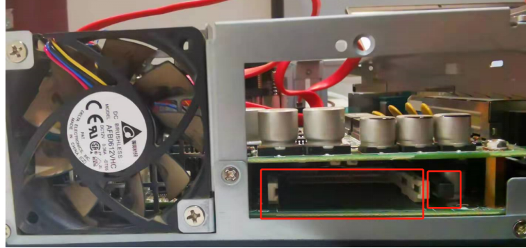

接口部分
内部器件示意图
背面

正面
本小节主要介绍各机型的组成部分，包括接口、内部组件位置、功能，从而为后续的排查工作提供支撑。
视觉控制器主要由机箱、主板、CPU、CPU风扇、内存、硬盘(固态盘用于装系统，机械盘用于存数据)、显卡、电源/适配器、以及对应的扩展卡或扩展模块(如POE网卡，USB3.0卡，cameralink卡，串口卡等)组成。
接口部分
拆机时如下图所示，拧下螺丝后向上将上盖打开
内部器件示意图
内部器件图如下图所示，其中小框中的螺丝为拆卸/安装时螺丝，分别对应硬盘支架、硬盘及CPU风扇。
内置USB用于加密狗的安装。
CPU
拆除风扇后的CPU如图所示，如需拆卸，将右下角固定扣向下按后向右按出，安装时注意左下角小三角的方向，主板上会有方向对应。
下部卡扣先扣在六角螺丝下，之后将右侧固定扣向左下按回。
CPU表面是硅脂，起散热作用。如CPU散热器拔不下来，需暖机后在做拆除。
系统固态盘
固态盘安装在视觉控制器侧面，拔出或需要重新插拔时按压右侧黑色卡扣，固态盘会弹出。
此固态盘用于装系统，为Cfast卡，装回时注意接口方向。

内存
内存位置在CPU风扇右侧，左右拨红框中的金属挡片，内存倾斜后拔出即可。装回时先斜插，然后往里推正就可以。
主板电池
主板电池主要用于BIOS信息的存储，位置位于控制盒主板下部，
接口部分
内部器件示意图
背面
正面
接口部分
内部器件示意图
背面
正面
本小节以IPC-610-786-9900K-32G-2TSSD-W10为例，但不局限于该视觉控制器，客户自用的视觉控制器在调试时也可参考该小节说明。
接口部分
注意
- 当插显卡时，左侧显示接口不可用，显示器连线需插在显卡接口上。
- 具体位置不同机型可能有所变动，仅参考接口外观及位置。
内部器件示意图
4U视觉控制器各组件位置如下图所示：
电源部分
电源一般分为模组电源和非模组电源,模组电源的输出可灵活接出，非模组电源输出均已接好。

主板
主板是视觉控制器的核心部分，视觉控制器的所有资源都来自于主板，包括CPU，内存，硬盘，显卡，网卡，以及各种接口。
插槽部分
主板中的插槽，PCIe x16主要用于插显卡(一般为双槽宽度，需要占两个槽位)，万兆网卡及双口cameralink卡需要PCIe x8。
PCIe x4可以插4口千兆网卡/POE卡，串口卡，单口cameralink卡，4口独立USB卡。
PCIe x1可支持双口千兆网卡/POE卡，串口卡，非独立USB卡。
PCI使用较少，一般可扩充单口千兆网卡。
所有PCIe槽均向下兼容，向上兼容时容易出现带宽不足或卡片无法识别的问题。
注意
有些厂家的主板槽位是PCIe x16或PCIe x8，当出现丢图时，考虑带宽问题，让客户提供主板资料。
内存部分
拆卸时，将红色部分往两侧按压，内存条可正常弹出。一般来说，同色内存插槽为双通道插槽，插两片内存时注意插槽颜色，优先选择同色。
硬盘部分
硬盘分为SATA线(信号线)和供电线，其中供电由电源提供，SATA线连接主板。
硬盘的形态较多，分类主要包括固态硬盘(SSD)和机械硬盘(HDD)，其中，固态硬盘的形态(接口)主要包括2.5寸sata盘、Msata、M.2及CFcard。
机械硬盘从尺寸上分为3.5寸和2.5寸，从存储逻辑上分，分为叠瓦盘和垂直盘。叠瓦盘一般用于冷存储(无擦写仓库盘)，有存图需求的项目建议使用垂直盘。通常来说，可以通过缓存来判断，64M的都是垂直盘，256M的需要确认是否为叠瓦盘。如果不确定客户现场使用的是什么盘，可以抓取硬盘型号确认。
显卡部分
显卡需要单独的供电，一般在显卡尾部，一般为8pin或双8pin供电。显卡正常上电时，显卡风扇是旋转的。注意，此风扇并非CPU风扇。